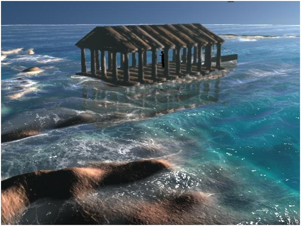
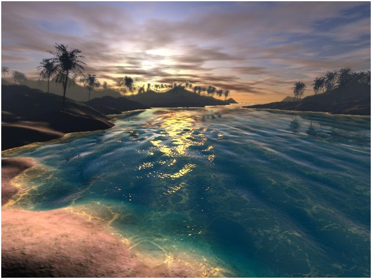

Operation Minecraft Bunny Bath
Using OpenGLSL, this project aims to create a more realistic rendering of some key components in Minecraft instead of the application’s block-style default renderings, such as water components, among others.
Teammates: Cynthia Chang, Christopher Cheung, Sungho Park
Problem Description
As gamers, we all wanted to create a project that we can use in our games. Since Minecraft’s graphics are very rudimentary, everything looks unrealistic - so we want to create shaders to improve aspects of the game such as the realism of the water, both in appearance and behavior. We are thinking of using OpenGL to create a shader pack that we will test by incorporating it into Minecraft. Some challenges include calculating how water shading works, learning how to use GLSL, and integrating our program smoothly with the Minecraft application.
Goals & Deliverables

|
|
|

|

|
What We Plan to Deliver
We plan to develop more realistic water shading for Minecraft. This will include implementing water caustics as well as realistic water reflection/refraction. The reflection portion would mean that, for example, if there was a tree next to the water, the water would properly reflect the tree on its surface. The refraction portion would mean that if there was a plant underwater, it would be refracted when seen from the player’s point of view above water. We plan to implement these details using GLSL, a shading language in OpenGL. The main graphics problems we will be dealing with involves ray tracing. Another obvious task we hope to accomplish is integrating our shader program with Minecraft. Once we do so, we will measure the quality of our shader by seeing how much laggier or buggier Minecraft is with our mod and overall how much more CPU intensive Minecraft is with our mod. Our demo will show water in a variety of Minecraft environments, including deep water, shallow water, water in the middle of the ocean, water next to the shore, and etc.
What We Hope to Deliver
If we get ahead of our timeline, we first hope to create waves and foam for our water. We hope to deliver SSAO for interior lighting once we finish water shading, as well as refraction from when the viewer is inside water.
Schedule
April 14th, 2020
Learn OpenGL and GLSL
Read papers to have a basic understanding of water shading
Start on working integration with Minecraft
April 21st, 2020
Water caustics completed
Working integration with Minecraft
April 28th, 2020
Most of water shading done
Milestone Deliverable - Webpage, Video
May 7th, 2020
Stretch goals
Resolve any issues/bugs
Create Final Video and Final Webpage
Resources
References:
GLSL Shader Tutorial: https://learnopengl.com/Getting-started/Shaders
GLSL Tutorial: http://www.lighthouse3d.com/tutorials/glsl-tutorial/
GLSL Documentations: https://www.khronos.org/registry/OpenGL/index_gl.php
Water rendering: http://evasion.imag.fr/Membres/Fabrice.Neyret/NaturalScenes/fluids/water/waves/fluids-nuages/waves/Jonathan/articlesCG/GPU_Gems2_tessendorfTechniqueOnGPU.pdf
Water shading: https://old.cescg.org/CESCG-2008/papers/BratislavaC-Mihalik-Andrej.pdf
https://www.gamedev.net/tutorials/programming/graphics/rendering-water-as-a-post-process-effect-r2642/
Water caustics: https://developer.download.nvidia.com/books/HTML/gpugems/gpugems_ch02.html
CMU paper on rendering water: http://www8.cs.umu.se/education/examina/Rapporter/MorganNaetterlund.pdf
Computing Platform:
Sungho, Chris: Macbook Pro (15-inch, 2016)
Cynthia: Ubuntu 18.04
Existing Code:
We will reference existing code from popular Minecraft shader mods to see how they integrate their GLSL code with the Minecraft application.